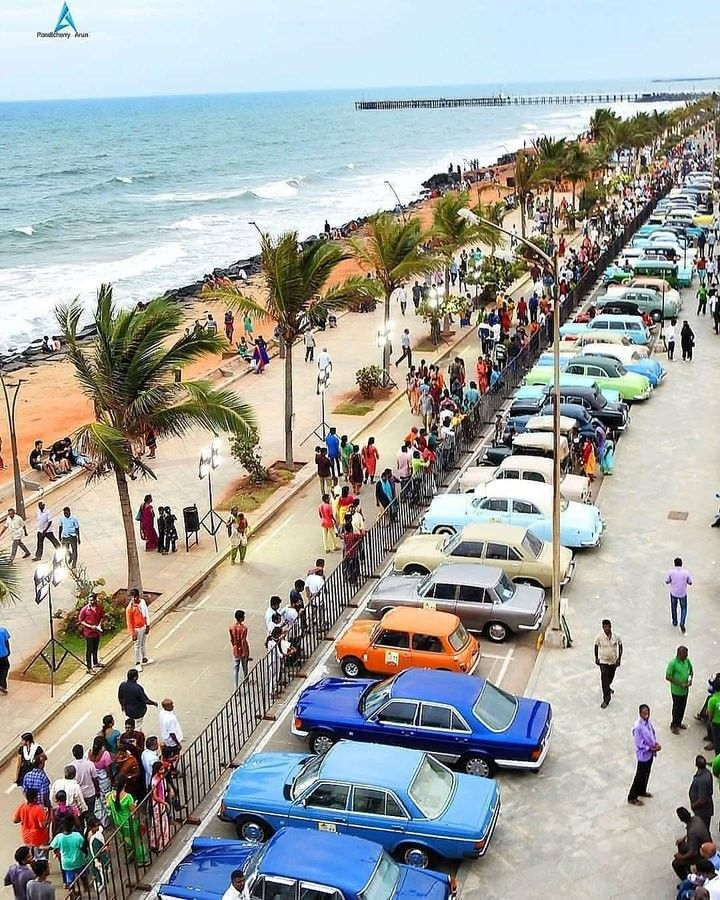
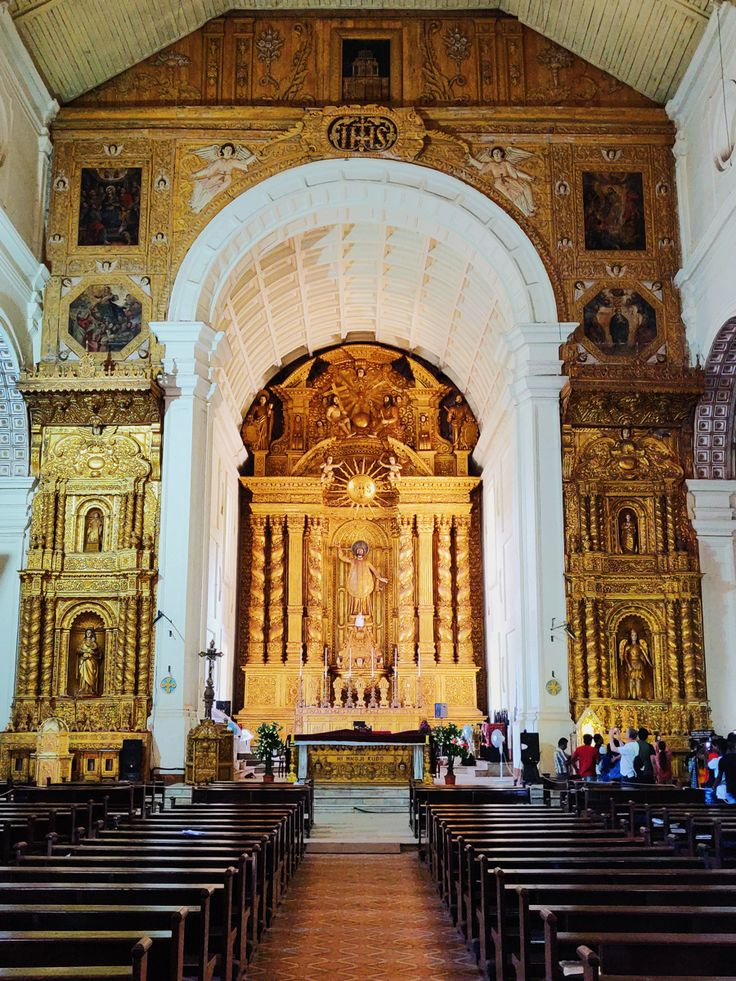
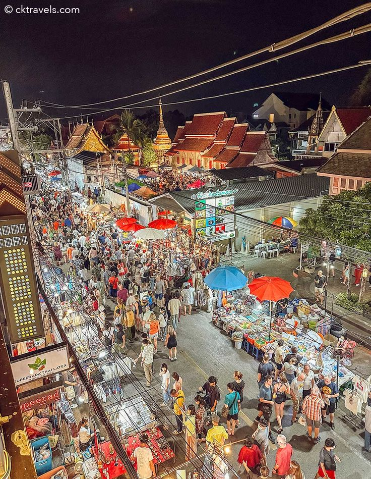
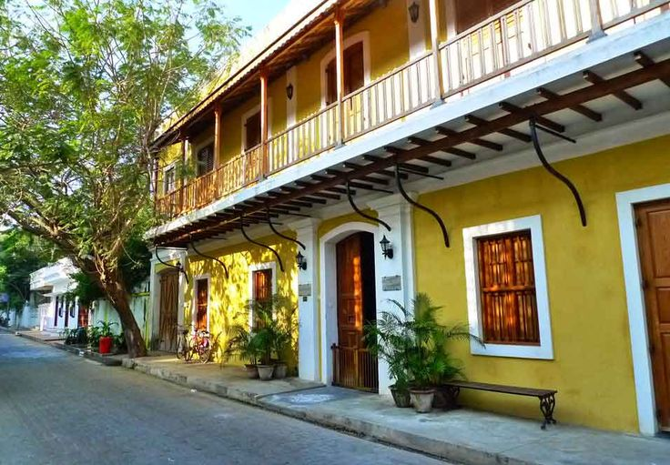

Welcome to Pondicherry!
Pondicherry (Puducherry): Pondicherry, now officially known as Puducherry, is a union territory in India. It was a French colonial settlement until 1954 and still retains a strong influence of French culture. The city is known for its charming streets, colonial architecture, and a mix of Indian and French cultures.
Key Attractions:
-
Beaches:
Promenade Beach:
A popular beachfront where locals and tourists alike gather to relax and enjoy the sea breeze.Paradise Beach:
Accessible by boat, this pristine beach is surrounded by palm trees and turquoise waters. Basilica of the Sacred Heart of Jesus:
A majestic church known for its Gothic architecture and serene ambiance.
 Beach Parties:
Pondicherry is a hub for nightlife with beach parties, shacks, and clubs attracting tourists from around the world.

Flea Markets:
Mission Street (Nehru Street):
This is one of the main shopping streets in Pondicherry, lined with shops and boutiques. You can find a range of items here, including clothing, accessories, and souvenirs. It's a great place for both traditional and modern shopping.Goubert Market:
Located near the Old Lighthouse, Goubert Market is a bustling market where you can find fresh produce, spices, and a variety of local goods. It's a traditional market that provides a glimpse into the daily life of the locals.
 French streets:
French Food Festival:
Given Pondicherry's French connection, there are often French-themed events and festivals, especially related to cuisine. Food festivals featuring French dishes and culinary delights are organized, attracting locals and tourists.

Local Cuisine:
Don't miss out on trying Goan cuisine, known for its use of seafood and unique spices.
How to Reach:
Pondicherry can be reached by air, train, and road. The Dabolim Airport is the main airport in Pondicherry.